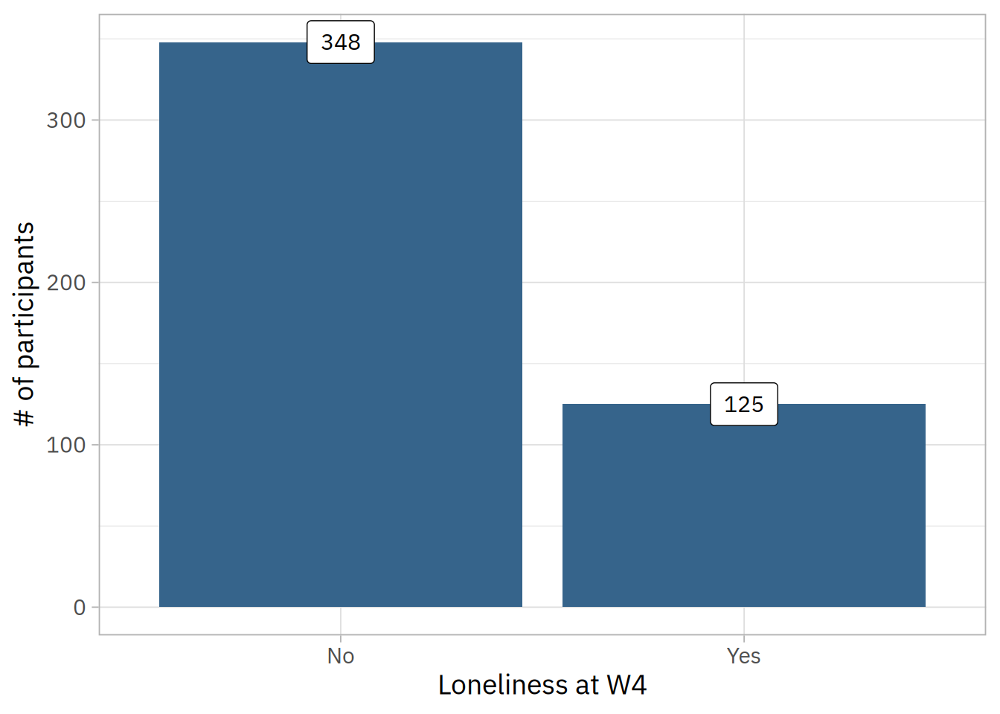

Code
df <- haven::read_sav("./data/covidpsy_weighted.sav") |>
janitor::clean_names() |>
haven::as_factor()Data analysis code
Bruno Braga Montezano ![]()
df <- haven::read_sav("./data/covidpsy_weighted.sav") |>
janitor::clean_names() |>
haven::as_factor()First, we used the read_sav function from the haven package to load the dataset. The original data has 8102 rows and 477 columns. Although, in the next step we will filter the data with subjects that present valid values for UCLA (UCLA Loneliness Scale 3-item version) in the first and fourth waves and evaluate just those that did not have loneliness at baseline (W1). We will also select only the variables to be used on the data routines. The clean_names function from the janitor package was used to clean the variable names in order to facilitate data manipulation later on.
df_loneliness <- df |> dplyr::select(
ucla_total,
ucla_total_w4,
gender_birth,
heterosexual = heterossexual,
color,
year_birth,
education,
education_grouped,
household_income,
number_people_house,
unemployed,
social_distancing,
phq_total,
gad_total,
classif_audit,
marijuana_frequency,
physical_activity_dichotomized,
physical_activity_grouped,
sleep_quality,
marital_status_grouped,
friend_relationship,
family_relationship,
religion,
sampling_weight,
ipw_w4
) |>
dplyr::filter(
!is.na(ucla_total),
!is.na(ucla_total_w4)
)In this step, we selected 25 variables. They are the following: UCLA total score on W1 (ucla_total), UCLA total score on W4 (ucla_total_w4), gender at birth (gender_birth), heterosexual (heterosexual), skin color (color), birth year (year_birth), seven categories of education (education), three categories of education (education_grouped), five levels of household income (household_income), number of people in your house including you (number_people_house), unemployment (unemployed), social distancing (social_distancing), PHQ-9 total score at W1 (phq_total), GAD-7 total score at W1 (gad_total), AUDIT risk [4 categories] (classif_audit), cannabis use frequency (marijuana_frequency), physical activity [binary variable] (physical_acitivty_dichotomized), physical activity [more or less than 150min/week] (physical_activity_grouped), sleep quality [four categories] (sleep_quality), marital status [with or without partner] (marital_status_grouped), friend relationship quality (friend_relationship), family relationship quality (family_relationship), has a religion (religion), sampling weight for demographics (sampling_weight), weight for attrition at W4 (ipw_w4).
After the removal of subjects with missing values on UCLA at W1 or W4, we ended up with a dataset of 944 subjects.
df_loneliness <- df_loneliness |>
dplyr::filter(ucla_total < 6)After removing the subjects with loneliness (UCLA \(\geq\) 6) at baseline (W1), there were 473 participants remaining.
In this section, we use the skimr package to create a detailed summary for each variable in the dataset in order to get an overview of the data.
skimr::skim(df_loneliness)| Name | df_loneliness |
| Number of rows | 473 |
| Number of columns | 25 |
| _______________________ | |
| Column type frequency: | |
| factor | 17 |
| numeric | 8 |
| ________________________ | |
| Group variables | None |
Variable type: factor
| skim_variable | n_missing | complete_rate | ordered | n_unique | top_counts |
|---|---|---|---|---|---|
| gender_birth | 0 | 1 | FALSE | 2 | Fem: 412, Mal: 61 |
| heterosexual | 0 | 1 | FALSE | 2 | sim: 414, não: 59 |
| color | 0 | 1 | FALSE | 5 | Bra: 278, Par: 116, Pre: 72, Ama: 6 |
| education | 0 | 1 | FALSE | 6 | Pós: 249, Ens: 110, Ens: 79, Ens: 32 |
| education_grouped | 0 | 1 | FALSE | 3 | Mas: 249, Som: 189, Up : 35 |
| household_income | 0 | 1 | FALSE | 5 | B: 180, D: 114, C: 108, A: 50 |
| unemployed | 0 | 1 | FALSE | 2 | No: 416, Yes: 57 |
| social_distancing | 0 | 1 | FALSE | 2 | Sim: 446, Não: 27 |
| classif_audit | 0 | 1 | FALSE | 4 | bai: 345, ris: 96, alt: 16, ris: 16 |
| marijuana_frequency | 0 | 1 | FALSE | 3 | Não: 454, Sem: 13, Men: 6 |
| physical_activity_dichotomized | 0 | 1 | FALSE | 2 | yes: 259, no: 214 |
| physical_activity_grouped | 0 | 1 | FALSE | 2 | Les: 424, Mor: 49 |
| sleep_quality | 0 | 1 | FALSE | 4 | Reg: 168, Bom: 162, Rui: 101, Exc: 42 |
| marital_status_grouped | 0 | 1 | FALSE | 2 | Wit: 259, Wit: 214 |
| friend_relationship | 0 | 1 | FALSE | 4 | Bon: 247, Reg: 142, Exc: 56, Rui: 28 |
| family_relationship | 0 | 1 | FALSE | 4 | Bon: 266, Reg: 120, Exc: 76, Rui: 11 |
| religion | 0 | 1 | FALSE | 2 | Não: 244, Sim: 229 |
Variable type: numeric
| skim_variable | n_missing | complete_rate | mean | sd | p0 | p25 | p50 | p75 | p100 | hist |
|---|---|---|---|---|---|---|---|---|---|---|
| ucla_total | 0 | 1 | 4.06 | 0.82 | 3.00 | 3.00 | 4.00 | 5.00 | 5.00 | ▆▁▇▁▇ |
| ucla_total_w4 | 0 | 1 | 4.49 | 1.60 | 3.00 | 3.00 | 4.00 | 6.00 | 9.00 | ▇▂▂▁▁ |
| year_birth | 0 | 1 | 1981.33 | 12.10 | 1946.00 | 1974.00 | 1983.00 | 1991.00 | 2002.00 | ▁▃▅▇▆ |
| number_people_house | 0 | 1 | 3.08 | 1.43 | 1.00 | 2.00 | 3.00 | 4.00 | 10.00 | ▇▇▂▁▁ |
| phq_total | 0 | 1 | 9.96 | 6.26 | 0.00 | 5.00 | 9.00 | 14.00 | 26.00 | ▇▇▆▃▂ |
| gad_total | 0 | 1 | 9.63 | 5.51 | 0.00 | 5.00 | 9.00 | 14.00 | 21.00 | ▆▇▇▅▅ |
| sampling_weight | 0 | 1 | 0.71 | 1.93 | 0.12 | 0.15 | 0.21 | 0.44 | 20.00 | ▇▁▁▁▁ |
| ipw_w4 | 0 | 1 | 8.16 | 3.07 | 5.11 | 5.87 | 7.22 | 9.66 | 19.16 | ▇▃▁▁▁ |
In this section, we are going to modify variables and create some new ones in order to facilitate the data analysis. We’ll go through the following steps:
outcome variable based on UCLA total score at W4. Scores \(\geq\) 6 will be positive (1) and values \(<\) 6 will be negative (0).age variable based on year_birth.age_2 and age_3). We will also standardize all age variables with \(z\)-scores.combined_weight variable that is the product of sampling_weight and ipw_w4 to weight analysis for both demographics and attrition.phq_total) and GAD-7 (gad_total) scores with \(z\)-scores to facilitate the interpretability of the coefficients.color) in white and non-white subjects.classif_audit) into two levels: low risk and moderate/high/severe risk.marijuana frequency) into “uses cannabis” and “does not use cannabis”.family_relationship), quality of friendship relationships (friend_relationship), and sleep quality (sleep_quality) into two levels: Bad/Fair and Good/Excellent.household_income) into three levels of socioeconomic status: A/B (upper), C (middle) and D/E (lower).education, physical_activity_dichotomized, ucla_total, ucla_total_w4, year_birth, marijuana_frequency, classif_audit.df_loneliness <- df_loneliness |>
dplyr::mutate(
# Step 1: Outcome variable based on UCLA score at W4
outcome = dplyr::if_else(ucla_total_w4 >= 6, 1, 0),
# Step 2: Age variable based on `year_birth`
age = 2020 - year_birth,
age_raw = age,
# Step 3: Create quadratic and cubic terms for age
age_2 = age ^ 2,
age_3 = age ^ 3,
dplyr::across(c(dplyr::starts_with("age"), -age_raw),
\(x) (x - mean(x)) / sd(x)
),
# Step 4: Build combined weight variable
combined_weight = sampling_weight * ipw_w4,
# Step 5: Standardize PHQ-9 and GAD-7 scores
dplyr::across(
dplyr::matches("^(phq|gad)_total$"),
\(x) (x - mean(x)) / sd(x)
),
# Step 6: Dichotomize skin color in white/non-white subjects
color = as.factor(dplyr::case_match(color,
"Branca" ~ "White",
c("Parda", "Preta", "Amarela", "Indigena") ~ "Non-white"
)),
# Step 7: Dichotomize AUDIT risk score
alcohol_risk = as.factor(dplyr::case_match(
classif_audit,
"baixo risco" ~ "Low risk",
c("risco moderado", "alto risco", "risco severo") ~ "High risk"
)),
# Step 8: Create cannabis use variable
cannabis_use = as.factor(dplyr::case_match(
marijuana_frequency,
"Não" ~ "No",
c("Menos que semanalmente", "Semanalmente ou Diariamente") ~ "Yes"
)),
# Step 9: Recode sleep quality, friend and family relationships
dplyr::across(
c(sleep_quality, friend_relationship, family_relationship),
\(x) as.factor(dplyr::case_match(
as.character(x),
c("Ruim", "Ruins", "Regular", "Regulares") ~ "Worse",
c("Bom", "Bons", "Excelente", "Excelentes") ~ "Better"
))
),
# Step 10: Create three levels of socioeconomic status
household_income = as.factor(dplyr::case_match(
household_income,
c("A", "B") ~ "Upper",
"C" ~ "Middle",
c("D", "E") ~ "Lower"
)),
# Step 11: Recode some variable labels and adjust reference levels
heterosexual = relevel(as.factor(dplyr::case_match(
heterosexual,
"não" ~ "No",
"sim" ~ "Yes"
)), ref = "Yes"),
religion = relevel(as.factor(dplyr::case_match(
religion,
"Não" ~ "No",
"Sim" ~ "Yes"
)), ref = "No"),
social_distancing = as.factor(dplyr::case_match(
social_distancing,
"Sim" ~ "Yes",
"Não" ~ "No"
)),
education_grouped = relevel(
education_grouped,
ref = "Up to high-school"
),
alcohol_risk = relevel(
alcohol_risk,
ref = "Low risk"
),
gender_birth = relevel(
gender_birth,
ref = "Male"
),
) |>
# Step 12: Remove some variables
dplyr::select(-c(education, physical_activity_dichotomized,
ucla_total, ucla_total_w4, year_birth,
marijuana_frequency, classif_audit)) |>
# Step 13: Relocate the outcome variable
dplyr::relocate(outcome, .before = dplyr::everything())The dataset is formatted as below:
knitr::kable(head(df_loneliness, 10))| outcome | gender_birth | heterosexual | color | education_grouped | household_income | number_people_house | unemployed | social_distancing | phq_total | gad_total | physical_activity_grouped | sleep_quality | marital_status_grouped | friend_relationship | family_relationship | religion | sampling_weight | ipw_w4 | age | age_raw | age_2 | age_3 | combined_weight | alcohol_risk | cannabis_use |
|---|---|---|---|---|---|---|---|---|---|---|---|---|---|---|---|---|---|---|---|---|---|---|---|---|---|
| 0 | Female | Yes | Non-white | Some college education | Lower | 2 | No | Yes | -0.7935850 | -1.3851317 | Less than 150min/week | Better | With partner | Worse | Worse | Yes | 0.3063481 | 12.300424 | -1.0476520 | 26 | -0.9445699 | -0.8243562 | 3.7682117 | Low risk | No |
| 0 | Female | Yes | White | Some college education | Lower | 5 | No | Yes | -0.1541204 | -0.6589834 | Less than 150min/week | Worse | Without partner | Better | Worse | No | 0.4129219 | 5.857325 | -1.3782871 | 22 | -1.1323569 | -0.9226467 | 2.4186181 | Low risk | No |
| 0 | Female | Yes | White | Master or Doctorate | Upper | 3 | No | Yes | 0.6452103 | 0.0671649 | Less than 150min/week | Worse | With partner | Worse | Worse | No | 0.2446609 | 5.910265 | 1.1014763 | 52 | 1.0389307 | 0.9211506 | 1.4460104 | Low risk | Yes |
| 0 | Female | Yes | Non-white | Master or Doctorate | Upper | 2 | No | Yes | -1.1133173 | -0.1143722 | Less than 150min/week | Worse | With partner | Better | Better | Yes | 0.1504424 | 6.925452 | 1.4321114 | 56 | 1.4614516 | 1.4178239 | 1.0418815 | High risk | No |
| 0 | Female | Yes | White | Some college education | Upper | 2 | No | Yes | 1.1248087 | 0.4302390 | Less than 150min/week | Worse | Without partner | Better | Better | Yes | 0.1970159 | 8.664241 | 1.3494526 | 55 | 1.3528872 | 1.2867179 | 1.7069930 | Low risk | No |
| 0 | Female | Yes | Non-white | Some college education | Upper | 5 | No | Yes | -0.4738527 | -0.6589834 | Less than 150min/week | Better | With partner | Better | Better | No | 0.1352377 | 9.693859 | -1.3782871 | 22 | -1.1323569 | -0.9226467 | 1.3109755 | Low risk | No |
| 0 | Female | Yes | White | Some college education | Lower | 5 | Yes | No | 0.9649426 | 1.7009985 | Less than 150min/week | Worse | With partner | Worse | Worse | No | 0.6710622 | 8.782572 | 0.1095709 | 40 | -0.0408448 | -0.1657194 | 5.8936524 | Low risk | No |
| 1 | Female | Yes | Non-white | Some college education | Upper | 2 | Yes | Yes | -0.1541204 | 0.0671649 | Less than 150min/week | Better | With partner | Worse | Worse | No | 0.1287050 | 5.551102 | -0.7996756 | 29 | -0.7831904 | -0.7276973 | 0.7144546 | High risk | No |
| 0 | Female | Yes | White | Master or Doctorate | Upper | 2 | No | No | -0.9534511 | -0.8405205 | More than 150min/week | Better | Without partner | Worse | Better | Yes | 0.1343119 | 5.111151 | 0.0269122 | 39 | -0.1181113 | -0.2321307 | 0.6864886 | Low risk | No |
| 0 | Female | No | White | Some college education | Lower | 2 | No | Yes | 1.1248087 | 1.1563873 | Less than 150min/week | Better | Without partner | Better | Better | Yes | 9.9837119 | 6.017146 | 0.1922297 | 41 | 0.0383779 | -0.0959031 | 60.0734511 | Low risk | No |
df_loneliness |>
dplyr::mutate(outcome = dplyr::if_else(outcome == 1, "Yes", "No")) |>
dplyr::count(outcome) |>
ggplot2::ggplot(ggplot2::aes(y = n, x = outcome, label = n)) +
ggplot2::geom_col(fill = "steelblue4") +
ggplot2::theme_light(14, "IBM Plex Sans") +
ggplot2::geom_label(
size = 4,
family = "IBM Plex Sans",
label.padding = ggplot2::unit(0.5, "lines")
) +
ggplot2::labs(x = "Loneliness at W4", y = "# of participants")
In this section we will create two tables: the first, weighted from demographics (using sampling_weight), and the second weighted based on the attrition (ipw_w4) associated with the fourth wave (W4).
df_loneliness |>
dplyr::select(-c(ipw_w4, age, age_2, age_3, combined_weight)) |>
dplyr::mutate(outcome = dplyr::if_else(outcome == 1, "Yes", "No")) |>
survey::svydesign(
~ 1,
data = _,
weights = ~ sampling_weight) |>
gtsummary::tbl_svysummary(
by = outcome,
include = -c(sampling_weight),
digits = list(
gtsummary::all_categorical() ~ c(0, 1, 1),
gtsummary::all_continuous() ~ 2
),
statistic = list(
gtsummary::all_categorical() ~ "{n_unweighted} ({p_unweighted}%/{p}%)"
),
label = list(
gender_birth ~ "Sex",
heterosexual ~ "Sexual orientation (heterosexual)",
color ~ "Skin color",
education_grouped ~ "Education",
household_income ~ "Socioeconomic status",
number_people_house ~ "Number of people in your house (including you)",
unemployed ~ "Unemployed",
social_distancing ~ "Social distancing",
phq_total ~ "Depressive symptoms (PHQ-9)",
gad_total ~ "Anxiety symptoms (GAD-7)",
physical_activity_grouped ~ "Physical activity",
sleep_quality ~ "Sleep quality",
marital_status_grouped ~ "Marital status (grouped)",
friend_relationship ~ "Friendship relationship quality",
family_relationship ~ "Family relationship quality",
religion ~ "Religion",
age_raw ~ "Age (in years)",
alcohol_risk ~ "Alcohol risk zone",
cannabis_use ~ "Cannabis use"
)
) |>
gtsummary::add_overall(last = TRUE) |>
gtsummary::add_p() |>
gtsummary::modify_header(
label = '**Characteristic**',
stat_1 = '**No**, *n* = 125',
stat_2 = '**Yes**, *n* = 348',
stat_0 = '**Overall**, *n* = 473',
p.value = '***p*-value**'
) |>
gtsummary::modify_caption("Descriptive table stratified by loneliness
incidence, weighted by demographics.")| Characteristic | No, n = 1251 | Yes, n = 3481 | Overall, n = 4731 | p-value2 |
|---|---|---|---|---|
| Sex | 0.10 | |||
| Male | 45 (12.9%/43.7%) | 16 (12.8%/23.8%) | 61 (12.9%/38.6%) | |
| Female | 303 (87.1%/56.3%) | 109 (87.2%/76.2%) | 412 (87.1%/61.4%) | |
| Sexual orientation (heterosexual) | 309 (88.8%/79.1%) | 105 (84.0%/77.9%) | 414 (87.5%/78.8%) | >0.9 |
| Skin color | 0.8 | |||
| Non-white | 136 (39.1%/48.6%) | 59 (47.2%/45.9%) | 195 (41.2%/47.9%) | |
| White | 212 (60.9%/51.4%) | 66 (52.8%/54.1%) | 278 (58.8%/52.1%) | |
| Education | 0.4 | |||
| Up to high-school | 20 (5.7%/12.8%) | 15 (12.0%/29.4%) | 35 (7.4%/17.1%) | |
| Some college education | 135 (38.8%/42.6%) | 54 (43.2%/32.6%) | 189 (40.0%/40.0%) | |
| Master or Doctorate | 193 (55.5%/44.6%) | 56 (44.8%/38.0%) | 249 (52.6%/42.9%) | |
| Socioeconomic status | 0.5 | |||
| Lower | 93 (26.7%/66.6%) | 42 (33.6%/71.0%) | 135 (28.5%/67.8%) | |
| Middle | 75 (21.6%/10.7%) | 33 (26.4%/13.9%) | 108 (22.8%/11.5%) | |
| Upper | 180 (51.7%/22.6%) | 50 (40.0%/15.1%) | 230 (48.6%/20.7%) | |
| Number of people in your house (including you) | 3.00 (2.00, 4.00) | 2.00 (1.00, 3.00) | 3.00 (2.00, 4.00) | 0.4 |
| Unemployed | 34 (9.8%/29.5%) | 23 (18.4%/38.1%) | 57 (12.1%/31.7%) | 0.6 |
| Social distancing | 327 (94.0%/95.4%) | 119 (95.2%/97.5%) | 446 (94.3%/95.9%) | 0.4 |
| Depressive symptoms (PHQ-9) | -0.63 (-1.27, 0.65) | 0.56 (0.01, 1.95) | -0.15 (-0.95, 1.12) | 0.001 |
| Anxiety symptoms (GAD-7) | -0.48 (-1.02, 0.79) | 0.73 (-0.11, 1.27) | -0.11 (-1.02, 1.09) | 0.005 |
| Physical activity | <0.001 | |||
| Less than 150min/week | 305 (87.6%/88.8%) | 119 (95.2%/98.4%) | 424 (89.6%/91.3%) | |
| More than 150min/week | 43 (12.4%/11.2%) | 6 (4.8%/1.6%) | 49 (10.4%/8.7%) | |
| Sleep quality | 0.003 | |||
| Better | 163 (46.8%/51.2%) | 41 (32.8%/18.9%) | 204 (43.1%/42.9%) | |
| Worse | 185 (53.2%/48.8%) | 84 (67.2%/81.1%) | 269 (56.9%/57.1%) | |
| Marital status (grouped) | 0.2 | |||
| Without partner | 146 (42.0%/56.8%) | 68 (54.4%/72.2%) | 214 (45.2%/60.7%) | |
| With partner | 202 (58.0%/43.2%) | 57 (45.6%/27.8%) | 259 (54.8%/39.3%) | |
| Friendship relationship quality | 0.4 | |||
| Better | 231 (66.4%/66.2%) | 72 (57.6%/55.1%) | 303 (64.1%/63.3%) | |
| Worse | 117 (33.6%/33.8%) | 53 (42.4%/44.9%) | 170 (35.9%/36.7%) | |
| Family relationship quality | 0.3 | |||
| Better | 263 (75.6%/78.3%) | 79 (63.2%/65.9%) | 342 (72.3%/75.2%) | |
| Worse | 85 (24.4%/21.7%) | 46 (36.8%/34.1%) | 131 (27.7%/24.8%) | |
| Religion | 165 (47.4%/53.9%) | 64 (51.2%/65.1%) | 229 (48.4%/56.8%) | 0.4 |
| Age (in years) | 44.00 (38.00, 52.00) | 43.00 (32.00, 53.78) | 44.00 (35.00, 53.33) | >0.9 |
| Alcohol risk zone | 0.056 | |||
| Low risk | 253 (72.7%/82.9%) | 92 (73.6%/59.2%) | 345 (72.9%/76.8%) | |
| High risk | 95 (27.3%/17.1%) | 33 (26.4%/40.8%) | 128 (27.1%/23.2%) | |
| Cannabis use | 14 (4.0%/5.4%) | 5 (4.0%/5.2%) | 19 (4.0%/5.4%) | >0.9 |
| 1 n (unweighted) (% (unweighted)/%); Median (IQR) | ||||
| 2 chi-squared test with Rao & Scott’s second-order correction; Wilcoxon rank-sum test for complex survey samples | ||||
df_loneliness |>
dplyr::select(-c(sampling_weight, age, age_2, age_3, combined_weight)) |>
dplyr::mutate(outcome = dplyr::if_else(outcome == 1, "Yes", "No")) |>
survey::svydesign(
~ 1,
data = _,
weights = ~ ipw_w4) |>
gtsummary::tbl_svysummary(
by = outcome,
include = -c(ipw_w4),
digits = list(
gtsummary::all_categorical() ~ c(0, 1, 1),
gtsummary::all_continuous() ~ 2
),
statistic = list(
gtsummary::all_categorical() ~ "{n_unweighted} ({p_unweighted}%/{p}%)"
),
label = list(
gender_birth ~ "Sex",
heterosexual ~ "Sexual orientation (heterosexual)",
color ~ "Skin color",
education_grouped ~ "Education",
household_income ~ "Socioeconomic status",
number_people_house ~ "Number of people in your house (including you)",
unemployed ~ "Unemployed",
social_distancing ~ "Social distancing",
phq_total ~ "Depressive symptoms (PHQ-9)",
gad_total ~ "Anxiety symptoms (GAD-7)",
physical_activity_grouped ~ "Physical activity",
sleep_quality ~ "Sleep quality",
marital_status_grouped ~ "Marital status (grouped)",
friend_relationship ~ "Friendship relationship quality",
family_relationship ~ "Family relationship quality",
religion ~ "Religion",
age_raw ~ "Age (in years)",
alcohol_risk ~ "Alcohol risk zone",
cannabis_use ~ "Cannabis use"
)
) |>
gtsummary::add_overall(last = TRUE) |>
gtsummary::add_p() |>
gtsummary::modify_header(
label = '**Characteristic**',
stat_1 = '**No**, *n* = 125',
stat_2 = '**Yes**, *n* = 348',
stat_0 = '**Overall**, *n* = 473',
p.value = '***p*-value**'
) |>
gtsummary::modify_caption("Descriptive table stratified by loneliness
incidence, weighted by attrition.")| Characteristic | No, n = 1251 | Yes, n = 3481 | Overall, n = 4731 | p-value2 |
|---|---|---|---|---|
| Sex | >0.9 | |||
| Male | 45 (12.9%/18.9%) | 16 (12.8%/18.5%) | 61 (12.9%/18.8%) | |
| Female | 303 (87.1%/81.1%) | 109 (87.2%/81.5%) | 412 (87.1%/81.2%) | |
| Sexual orientation (heterosexual) | 309 (88.8%/87.9%) | 105 (84.0%/81.2%) | 414 (87.5%/86.1%) | 0.10 |
| Skin color | 0.041 | |||
| Non-white | 136 (39.1%/44.2%) | 59 (47.2%/55.6%) | 195 (41.2%/47.3%) | |
| White | 212 (60.9%/55.8%) | 66 (52.8%/44.4%) | 278 (58.8%/52.7%) | |
| Education | 0.023 | |||
| Up to high-school | 20 (5.7%/8.1%) | 15 (12.0%/17.6%) | 35 (7.4%/10.6%) | |
| Some college education | 135 (38.8%/42.2%) | 54 (43.2%/43.2%) | 189 (40.0%/42.5%) | |
| Master or Doctorate | 193 (55.5%/49.7%) | 56 (44.8%/39.3%) | 249 (52.6%/46.9%) | |
| Socioeconomic status | 0.2 | |||
| Lower | 93 (26.7%/32.2%) | 42 (33.6%/39.9%) | 135 (28.5%/34.3%) | |
| Middle | 75 (21.6%/21.8%) | 33 (26.4%/24.0%) | 108 (22.8%/22.4%) | |
| Upper | 180 (51.7%/46.0%) | 50 (40.0%/36.0%) | 230 (48.6%/43.3%) | |
| Number of people in your house (including you) | 3.00 (2.00, 4.00) | 3.00 (2.00, 4.00) | 3.00 (2.00, 4.00) | 0.2 |
| Unemployed | 34 (9.8%/10.4%) | 23 (18.4%/22.4%) | 57 (12.1%/13.7%) | 0.003 |
| Social distancing | 327 (94.0%/93.5%) | 119 (95.2%/95.7%) | 446 (94.3%/94.1%) | 0.4 |
| Depressive symptoms (PHQ-9) | -0.31 (-0.95, 0.59) | 0.33 (-0.15, 1.12) | -0.15 (-0.79, 0.65) | <0.001 |
| Anxiety symptoms (GAD-7) | -0.30 (-0.84, 0.43) | 0.29 (-0.30, 1.34) | -0.11 (-0.84, 0.79) | <0.001 |
| Physical activity | 0.010 | |||
| Less than 150min/week | 305 (87.6%/89.9%) | 119 (95.2%/96.6%) | 424 (89.6%/91.7%) | |
| More than 150min/week | 43 (12.4%/10.1%) | 6 (4.8%/3.4%) | 49 (10.4%/8.3%) | |
| Sleep quality | 0.003 | |||
| Better | 163 (46.8%/45.7%) | 41 (32.8%/29.6%) | 204 (43.1%/41.4%) | |
| Worse | 185 (53.2%/54.3%) | 84 (67.2%/70.4%) | 269 (56.9%/58.6%) | |
| Marital status (grouped) | 0.023 | |||
| Without partner | 146 (42.0%/39.2%) | 68 (54.4%/51.8%) | 214 (45.2%/42.7%) | |
| With partner | 202 (58.0%/60.8%) | 57 (45.6%/48.2%) | 259 (54.8%/57.3%) | |
| Friendship relationship quality | 0.11 | |||
| Better | 231 (66.4%/65.2%) | 72 (57.6%/56.4%) | 303 (64.1%/62.8%) | |
| Worse | 117 (33.6%/34.8%) | 53 (42.4%/43.6%) | 170 (35.9%/37.2%) | |
| Family relationship quality | 0.013 | |||
| Better | 263 (75.6%/74.0%) | 79 (63.2%/61.0%) | 342 (72.3%/70.5%) | |
| Worse | 85 (24.4%/26.0%) | 46 (36.8%/39.0%) | 131 (27.7%/29.5%) | |
| Religion | 165 (47.4%/47.7%) | 64 (51.2%/51.4%) | 229 (48.4%/48.7%) | 0.5 |
| Age (in years) | 37.00 (29.00, 48.00) | 35.00 (27.00, 42.00) | 37.00 (28.00, 46.00) | 0.025 |
| Alcohol risk zone | 0.9 | |||
| Low risk | 253 (72.7%/70.6%) | 92 (73.6%/71.5%) | 345 (72.9%/70.9%) | |
| High risk | 95 (27.3%/29.4%) | 33 (26.4%/28.5%) | 128 (27.1%/29.1%) | |
| Cannabis use | 14 (4.0%/4.0%) | 5 (4.0%/5.3%) | 19 (4.0%/4.4%) | 0.6 |
| 1 n (unweighted) (% (unweighted)/%); Median (IQR) | ||||
| 2 chi-squared test with Rao & Scott’s second-order correction; Wilcoxon rank-sum test for complex survey samples | ||||
In this step, we will run several bivariate analyses (\(loneliness ~ predictor\)) to pre-select the variables that will be used in the multi-predictor Poisson regression later on. The cut-off point we will use is based on \(p<0.2\). In the code below, we created a function to calculate the lower and upper bounds of the 95% confidence intervals (CI) within a tibble structure.
confint_df <- function(x) {
tibble::tibble(
lower = x[2, 1],
upper = x[2, 2]
)
}df_socio <- df_loneliness |>
dplyr::select(
outcome,
age,
age_2,
age_3,
gender_birth,
heterosexual,
education_grouped,
household_income,
color,
unemployed,
combined_weight
)
df_socio |>
purrr::keep(is.numeric) |>
tidyr::pivot_longer(
c(-outcome, -combined_weight),
names_to = "predictor",
values_to = "value"
) |>
dplyr::nest_by(predictor) |>
dplyr::mutate(mod = list(glm(outcome ~ value,
data = data,
family = poisson(link = "log"),
weights = combined_weight)),
confint = list(suppressMessages(confint(mod)))) |>
dplyr::reframe(
broom::tidy(mod),
confint_df(confint)
) |>
dplyr::filter(term != "(Intercept)") |>
dplyr::mutate(rr = exp(estimate),
rr_lower = exp(lower),
rr_upper = exp(upper)) |>
dplyr::select(
Variable = predictor,
Category = term,
`$\\beta$` = estimate,
SE = std.error,
RR = rr,
`RR (lower)` = rr_lower,
`RR (upper)` = rr_upper,
`p-value` = p.value
) |>
knitr::kable(
digits = 3,
caption = "Bivariate analysis of numeric predictors of the sociodemographic domain."
)| Variable | Category | \(\beta\) | SE | RR | RR (lower) | RR (upper) | p-value |
|---|---|---|---|---|---|---|---|
| age | value | -0.089 | 0.033 | 0.914 | 0.856 | 0.976 | 0.007 |
| age_2 | value | -0.053 | 0.031 | 0.948 | 0.892 | 1.007 | 0.087 |
| age_3 | value | -0.028 | 0.028 | 0.973 | 0.920 | 1.027 | 0.328 |
df_socio |>
dplyr::select(-dplyr::contains("age")) |>
tidyr::pivot_longer(
c(-outcome, -combined_weight),
names_to = "predictor",
values_to = "value"
) |>
dplyr::nest_by(predictor) |>
dplyr::mutate(mod = list(glm(outcome ~ value,
data = data,
family = poisson(link = "log"),
weights = combined_weight)),
confint = list(suppressMessages(confint(mod)))) |>
dplyr::reframe(
broom::tidy(mod),
confint_df(confint)
) |>
dplyr::filter(term != "(Intercept)") |>
dplyr::mutate(rr = exp(estimate),
rr_lower = exp(lower),
rr_upper = exp(upper)) |>
dplyr::select(
Variable = predictor,
Category = term,
`$\\beta$` = estimate,
SE = std.error,
RR = rr,
`RR (lower)` = rr_lower,
`RR (upper)` = rr_upper,
`p-value` = p.value
) |>
knitr::kable(
digits = 3,
caption = "Bivariate analysis of categorical predictors of the sociodemographic domain."
)| Variable | Category | \(\beta\) | SE | RR | RR (lower) | RR (upper) | p-value |
|---|---|---|---|---|---|---|---|
| color | valueWhite | 0.072 | 0.071 | 1.074 | 0.934 | 1.234 | 0.314 |
| education_grouped | valueSome college education | -0.552 | 0.088 | 0.576 | 0.484 | 0.685 | 0.000 |
| education_grouped | valueMaster or Doctorate | -0.489 | 0.087 | 0.614 | 0.484 | 0.685 | 0.000 |
| gender_birth | valueFemale | 0.804 | 0.075 | 2.234 | 1.930 | 2.591 | 0.000 |
| heterosexual | valueNo | 0.253 | 0.078 | 1.288 | 1.105 | 1.498 | 0.001 |
| household_income | valueMiddle | 0.220 | 0.112 | 1.246 | 0.995 | 1.543 | 0.049 |
| household_income | valueUpper | -0.122 | 0.097 | 0.885 | 0.995 | 1.543 | 0.209 |
| unemployed | valueNo | -0.263 | 0.072 | 0.769 | 0.669 | 0.885 | 0.000 |
On the sociodemographic domain, the only variables that did not reach the significance cut-off were the cubic term of age (age_3), skin color (color), and “Upper” level of socioeconomic status (household_income). Since there are three levels in socioeconomic status (household_income), this variable will continue in further investigations.
df_ls <- df_loneliness |>
dplyr::select(
outcome,
physical_activity_grouped,
sleep_quality,
family_relationship,
friend_relationship,
combined_weight
)
df_ls |>
tidyr::pivot_longer(
c(-outcome, -combined_weight),
names_to = "predictor",
values_to = "value"
) |>
dplyr::nest_by(predictor) |>
dplyr::mutate(mod = list(glm(outcome ~ value,
data = data,
family = poisson(link = "log"),
weights = combined_weight)),
confint = list(suppressMessages(confint(mod)))) |>
dplyr::reframe(
broom::tidy(mod),
confint_df(confint)
) |>
dplyr::filter(term != "(Intercept)") |>
dplyr::mutate(rr = exp(estimate),
rr_lower = exp(lower),
rr_upper = exp(upper)) |>
dplyr::select(
Variable = predictor,
Category = term,
`$\\beta$` = estimate,
SE = std.error,
RR = rr,
`RR (lower)` = rr_lower,
`RR (upper)` = rr_upper,
`p-value` = p.value
) |>
knitr::kable(
digits = 3,
caption = "Bivariate analysis of predictors of the lifestyle domain."
)| Variable | Category | \(\beta\) | SE | RR | RR (lower) | RR (upper) | p-value |
|---|---|---|---|---|---|---|---|
| family_relationship | valueWorse | 0.618 | 0.074 | 1.856 | 1.604 | 2.142 | 0 |
| friend_relationship | valueWorse | 0.287 | 0.071 | 1.332 | 1.159 | 1.531 | 0 |
| physical_activity_grouped | valueMore than 150min/week | -1.771 | 0.349 | 0.170 | 0.079 | 0.315 | 0 |
| sleep_quality | valueWorse | 1.301 | 0.095 | 3.672 | 3.061 | 4.440 | 0 |
In the lifestyle domain, all variables have reached the significance cut-off.
df_clinical <- df_loneliness |>
dplyr::select(
outcome,
phq_total,
gad_total,
alcohol_risk,
cannabis_use,
combined_weight
)
df_clinical |>
dplyr::select(-alcohol_risk, -cannabis_use) |>
tidyr::pivot_longer(
c(-outcome, -combined_weight),
names_to = "predictor",
values_to = "value"
) |>
dplyr::nest_by(predictor) |>
dplyr::mutate(mod = list(glm(outcome ~ value,
data = data,
family = poisson(link = "log"),
weights = combined_weight)),
confint = list(suppressMessages(confint(mod)))) |>
dplyr::reframe(
broom::tidy(mod),
confint_df(confint)
) |>
dplyr::filter(term != "(Intercept)") |>
dplyr::mutate(rr = exp(estimate),
rr_lower = exp(lower),
rr_upper = exp(upper)) |>
dplyr::select(
Variable = predictor,
Category = term,
`$\\beta$` = estimate,
SE = std.error,
RR = rr,
`RR (lower)` = rr_lower,
`RR (upper)` = rr_upper,
`p-value` = p.value
) |>
knitr::kable(
digits = 3,
caption = "Bivariate analysis of depressive and anxiety symptoms."
)| Variable | Category | \(\beta\) | SE | RR | RR (lower) | RR (upper) | p-value |
|---|---|---|---|---|---|---|---|
| gad_total | value | 0.531 | 0.034 | 1.70 | 1.591 | 1.818 | 0 |
| phq_total | value | 0.513 | 0.029 | 1.67 | 1.577 | 1.769 | 0 |
df_clinical |>
dplyr::select(-phq_total, -gad_total) |>
tidyr::pivot_longer(
c(-outcome, -combined_weight),
names_to = "predictor",
values_to = "value"
) |>
dplyr::nest_by(predictor) |>
dplyr::mutate(mod = list(glm(outcome ~ value,
data = data,
family = poisson(link = "log"),
weights = combined_weight)),
confint = list(suppressMessages(confint(mod)))) |>
dplyr::reframe(
broom::tidy(mod),
confint_df(confint)
) |>
dplyr::filter(term != "(Intercept)") |>
dplyr::mutate(rr = exp(estimate),
rr_lower = exp(lower),
rr_upper = exp(upper)) |>
dplyr::select(
Variable = predictor,
Category = term,
`$\\beta$` = estimate,
SE = std.error,
RR = rr,
`RR (lower)` = rr_lower,
`RR (upper)` = rr_upper,
`p-value` = p.value
) |>
knitr::kable(
digits = 3,
caption = "Bivariate analysis of alcohol risk and cannabis use."
)| Variable | Category | \(\beta\) | SE | RR | RR (lower) | RR (upper) | p-value |
|---|---|---|---|---|---|---|---|
| alcohol_risk | valueHigh risk | 0.916 | 0.072 | 2.500 | 2.172 | 2.875 | 0.000 |
| cannabis_use | valueYes | 0.301 | 0.146 | 1.351 | 1.003 | 1.778 | 0.039 |
Regarding the clinical domain, all variables have reached the statistical significance cut-off.
We sequentially added the significant variables from the last analyses into the Poisson regression, starting from the most distal domain to the most proximal one (sociodemographic \(\rightarrow\) lifestyle \(\rightarrow\) social \(\rightarrow\) clinical). The variables that presented \(p<0.1\) in the entry stage remained in the model until the end, even if they lost their significance in later stages, and those with \(p<0.05\) were considered significant.
# Sociodemographic domain - first entry
df_loneliness |>
glm(outcome ~ age + age_2 + education_grouped + gender_birth +
heterosexual + household_income,
data = _,
family = poisson(link = "log"),
weights = combined_weight
) |>
broom::tidy(conf.int = TRUE) |>
dplyr::select(-statistic, -std.error) |>
dplyr::mutate(dplyr::across(c(estimate, conf.low, conf.high),
exp)) |>
dplyr::filter(term != "(Intercept)") |>
dplyr::relocate(p.value, .after = dplyr::last_col()) |>
dplyr::relocate(estimate, .before = conf.low) |>
dplyr::mutate(p_lt_01 = dplyr::if_else(p.value < 0.1, "Yes", "No")) |>
purrr::set_names(
"Variable", "RR", "RR (lower)", "RR (upper)", "$p$-value", "$p<0.1$"
) |>
knitr::kable(
digits = 3,
caption = "Weighted poisson regression with $p$-value
$<$ 0.2 in bivariate analysis in sociodemographic domain - first entry."
)| Variable | RR | RR (lower) | RR (upper) | \(p\)-value | \(p<0.1\) |
|---|---|---|---|---|---|
| age | 0.412 | 0.295 | 0.582 | 0.000 | Yes |
| age_2 | 2.487 | 1.786 | 3.433 | 0.000 | Yes |
| education_groupedSome college education | 0.406 | 0.335 | 0.491 | 0.000 | Yes |
| education_groupedMaster or Doctorate | 0.460 | 0.375 | 0.563 | 0.000 | Yes |
| gender_birthFemale | 2.804 | 2.386 | 3.304 | 0.000 | Yes |
| heterosexualNo | 2.510 | 2.087 | 3.012 | 0.000 | Yes |
| household_incomeMiddle | 1.298 | 1.026 | 1.625 | 0.026 | Yes |
| household_incomeUpper | 1.171 | 0.931 | 1.466 | 0.173 | No |
# Lifestyle domain - second entry
df_loneliness |>
glm(outcome ~ age + age_2 + education_grouped + gender_birth +
heterosexual + household_income + family_relationship +
friend_relationship + physical_activity_grouped + sleep_quality,
data = _,
family = poisson(link = "log"),
weights = combined_weight
) |>
broom::tidy(conf.int = TRUE) |>
dplyr::select(-statistic, -std.error) |>
dplyr::mutate(dplyr::across(c(estimate, conf.low, conf.high),
exp)) |>
dplyr::filter(term != "(Intercept)") |>
dplyr::relocate(p.value, .after = dplyr::last_col()) |>
dplyr::relocate(estimate, .before = conf.low) |>
dplyr::mutate(p_lt_01 = dplyr::if_else(p.value < 0.1, "Yes", "No")) |>
purrr::set_names(
"Variable", "RR", "RR (lower)", "RR (upper)", "$p$-value", "$p<0.1$"
) |>
knitr::kable(
digits = 3,
caption = "Weighted poisson regression with $p$-value
$<$ 0.2 in bivariate analysis in lifestyle domain - second entry."
)| Variable | RR | RR (lower) | RR (upper) | \(p\)-value | \(p<0.1\) |
|---|---|---|---|---|---|
| age | 0.701 | 0.479 | 1.037 | 0.072 | Yes |
| age_2 | 1.523 | 1.048 | 2.192 | 0.026 | Yes |
| education_groupedSome college education | 0.531 | 0.438 | 0.644 | 0.000 | Yes |
| education_groupedMaster or Doctorate | 0.453 | 0.366 | 0.561 | 0.000 | Yes |
| gender_birthFemale | 2.381 | 1.984 | 2.864 | 0.000 | Yes |
| heterosexualNo | 2.226 | 1.840 | 2.686 | 0.000 | Yes |
| household_incomeMiddle | 1.456 | 1.155 | 1.817 | 0.001 | Yes |
| household_incomeUpper | 1.353 | 1.079 | 1.687 | 0.008 | Yes |
| family_relationshipWorse | 1.350 | 1.131 | 1.610 | 0.001 | Yes |
| friend_relationshipWorse | 1.027 | 0.867 | 1.215 | 0.758 | No |
| physical_activity_groupedMore than 150min/week | 0.176 | 0.081 | 0.331 | 0.000 | Yes |
| sleep_qualityWorse | 3.114 | 2.563 | 3.808 | 0.000 | Yes |
# Social domain - third entry
df_loneliness |>
glm(outcome ~ age + age_2 + education_grouped + gender_birth +
heterosexual + household_income + family_relationship +
physical_activity_grouped + sleep_quality + number_people_house,
data = _,
family = poisson(link = "log"),
weights = combined_weight
) |>
broom::tidy(conf.int = TRUE) |>
dplyr::select(-statistic, -std.error) |>
dplyr::mutate(dplyr::across(c(estimate, conf.low, conf.high),
exp)) |>
dplyr::filter(term != "(Intercept)") |>
dplyr::relocate(p.value, .after = dplyr::last_col()) |>
dplyr::relocate(estimate, .before = conf.low) |>
dplyr::mutate(p_lt_01 = dplyr::if_else(p.value < 0.1, "Yes", "No")) |>
purrr::set_names(
"Variable", "RR", "RR (lower)", "RR (upper)", "$p$-value", "$p<0.1$"
) |>
knitr::kable(
digits = 3,
caption = "Weighted poisson regression with $p$-value
$<$ 0.2 in bivariate analysis in social domain - third entry."
)| Variable | RR | RR (lower) | RR (upper) | \(p\)-value | \(p<0.1\) |
|---|---|---|---|---|---|
| age | 0.689 | 0.469 | 1.022 | 0.061 | Yes |
| age_2 | 1.480 | 1.015 | 2.139 | 0.039 | Yes |
| education_groupedSome college education | 0.569 | 0.467 | 0.693 | 0.000 | Yes |
| education_groupedMaster or Doctorate | 0.462 | 0.373 | 0.570 | 0.000 | Yes |
| gender_birthFemale | 2.300 | 1.921 | 2.759 | 0.000 | Yes |
| heterosexualNo | 1.979 | 1.616 | 2.418 | 0.000 | Yes |
| household_incomeMiddle | 1.495 | 1.184 | 1.867 | 0.001 | Yes |
| household_incomeUpper | 1.427 | 1.136 | 1.782 | 0.002 | Yes |
| family_relationshipWorse | 1.467 | 1.233 | 1.745 | 0.000 | Yes |
| physical_activity_groupedMore than 150min/week | 0.160 | 0.073 | 0.301 | 0.000 | Yes |
| sleep_qualityWorse | 2.967 | 2.452 | 3.614 | 0.000 | Yes |
| number_people_house | 0.902 | 0.852 | 0.953 | 0.000 | Yes |
# Clinical domain - fourth entry
df_loneliness |>
glm(outcome ~ age + age_2 + education_grouped + gender_birth +
heterosexual + household_income + family_relationship +
physical_activity_grouped + sleep_quality + number_people_house +
phq_total + gad_total + alcohol_risk + cannabis_use,
data = _,
family = poisson(link = "log"),
weights = combined_weight
) |>
broom::tidy(conf.int = TRUE) |>
dplyr::select(-statistic, -std.error) |>
dplyr::mutate(dplyr::across(c(estimate, conf.low, conf.high),
exp)) |>
dplyr::filter(term != "(Intercept)") |>
dplyr::relocate(p.value, .after = dplyr::last_col()) |>
dplyr::relocate(estimate, .before = conf.low) |>
dplyr::mutate(p_lt_01 = dplyr::if_else(p.value < 0.1, "Yes", "No")) |>
purrr::set_names(
"Variable", "RR", "RR (lower)", "RR (upper)", "$p$-value", "$p<0.1$"
) |>
knitr::kable(
digits = 3,
caption = "Weighted poisson regression with $p$-value
$<$ 0.2 in bivariate analysis in clinical domain - fourth entry."
)| Variable | RR | RR (lower) | RR (upper) | \(p\)-value | \(p<0.1\) |
|---|---|---|---|---|---|
| age | 0.343 | 0.224 | 0.529 | 0.000 | Yes |
| age_2 | 2.849 | 1.881 | 4.287 | 0.000 | Yes |
| education_groupedSome college education | 0.684 | 0.551 | 0.851 | 0.001 | Yes |
| education_groupedMaster or Doctorate | 0.705 | 0.556 | 0.893 | 0.004 | Yes |
| gender_birthFemale | 1.719 | 1.393 | 2.119 | 0.000 | Yes |
| heterosexualNo | 1.518 | 1.227 | 1.872 | 0.000 | Yes |
| household_incomeMiddle | 1.388 | 1.094 | 1.743 | 0.006 | Yes |
| household_incomeUpper | 1.361 | 1.062 | 1.735 | 0.014 | Yes |
| family_relationshipWorse | 1.370 | 1.143 | 1.641 | 0.001 | Yes |
| physical_activity_groupedMore than 150min/week | 0.177 | 0.078 | 0.348 | 0.000 | Yes |
| sleep_qualityWorse | 2.071 | 1.683 | 2.563 | 0.000 | Yes |
| number_people_house | 0.968 | 0.913 | 1.024 | 0.262 | No |
| phq_total | 1.214 | 1.080 | 1.366 | 0.001 | Yes |
| gad_total | 1.191 | 1.049 | 1.352 | 0.007 | Yes |
| alcohol_riskHigh risk | 1.579 | 1.322 | 1.882 | 0.000 | Yes |
| cannabis_useYes | 1.750 | 1.250 | 2.399 | 0.001 | Yes |
block_1 <- glm(outcome ~ age + age_2 + education_grouped + gender_birth +
heterosexual + household_income,
data = df_loneliness,
family = poisson(link = "log"),
weights = combined_weight
)
block_2 <- glm(outcome ~ age + age_2 + education_grouped + gender_birth +
heterosexual + household_income + family_relationship +
friend_relationship + physical_activity_grouped + sleep_quality,
data = df_loneliness,
family = poisson(link = "log"),
weights = combined_weight
)
block_3 <- glm(outcome ~ age + age_2 + education_grouped + gender_birth +
heterosexual + household_income + family_relationship +
physical_activity_grouped + sleep_quality + number_people_house,
data = df_loneliness,
family = poisson(link = "log"),
weights = combined_weight
)
block_4 <- glm(outcome ~ age + age_2 + education_grouped + gender_birth +
heterosexual + household_income + family_relationship +
physical_activity_grouped + sleep_quality + number_people_house +
phq_total + gad_total + alcohol_risk + cannabis_use,
data = df_loneliness,
family = poisson(link = "log"),
weights = combined_weight
)
huxtable::huxreg(
list("Block 1: Sociodemographic" = block_1,
"Block 2: Lifestyle" = block_2,
"Block 3: Social" = block_3,
"Block 4: Clinical" = block_4),
stars = NULL,
error_format = "[{conf.low}, {conf.high}], {dplyr::if_else(p.value < 0.001, 'p<0.001', paste0('p=', as.character(p.value)))}",
error_pos = "same",
bold_signif = 0.05,
number_format = "%.3f",
statistics = c(n = "nobs",
"-2log likelihood" = "logLik",
AIC = "AIC",
BIC = "BIC"),
ci_level = 0.95,
outer_borders = 1,
tidy_args = list(exponentiate = TRUE, conf.int = TRUE),
coefs = c("(Intercept)" = "(Intercept)",
"Age (z-score)" = "age",
"Age (quadratic term)" = "age_2",
"Education (college education)" = "education_groupedSome college education",
"Education (master or PhD)" = "education_groupedMaster or Doctorate",
"Sex (male)" = "gender_birthFemale",
"Sexual orientation (non-heterosexual)" = "heterosexualNo",
"Socioeconomic status (middle)" = "household_incomeMiddle",
"Socioeconomic status (upper)" = "household_incomeUpper",
"Socioeconomic status (upper)" = "household_incomeUpper",
"Family relationship (bad or regular)" = "family_relationshipWorse",
"Friendship relationship (bad or regular)" = "friend_relationshipWorse",
"Physical activity (more than 150 min/week)" = "physical_activity_groupedMore than 150min/week",
"Sleep quality (bad or regular)" = "sleep_qualityWorse",
"Number of people living in your house" = "number_people_house",
"Depressive symptoms (PHQ-9)" = "phq_total",
"Anxiety symptoms (GAD-7)" = "gad_total",
"Alcohol risk zone (moderate, high or severe)" = "alcohol_riskHigh risk",
"Cannabis use (yes)" = "cannabis_useYes")
) |>
huxtable::set_caption("Multi-predictor Poisson regression analysis to
evaluate factors associated with loneliness incidence. The table
presents the risk ratios and the corresponding 95% CIs with p-values.")| Block 1: Sociodemographic | Block 2: Lifestyle | Block 3: Social | Block 4: Clinical | |
| (Intercept) | 0.175 [0.146, 0.209], p<0.001 | 0.074 [0.057, 0.094], p<0.001 | 0.102 [0.075, 0.139], p<0.001 | 0.085 [0.061, 0.117], p<0.001 |
| Age (z-score) | 0.412 [0.295, 0.582], p<0.001 | 0.701 [0.479, 1.037], p=0.072 | 0.689 [0.469, 1.022], p=0.061 | 0.343 [0.224, 0.529], p<0.001 |
| Age (quadratic term) | 2.487 [1.786, 3.433], p<0.001 | 1.523 [1.048, 2.192], p=0.026 | 1.480 [1.015, 2.139], p=0.039 | 2.849 [1.881, 4.287], p<0.001 |
| Education (college education) | 0.406 [0.335, 0.491], p<0.001 | 0.531 [0.438, 0.644], p<0.001 | 0.569 [0.467, 0.693], p<0.001 | 0.684 [0.551, 0.851], p<0.001 |
| Education (master or PhD) | 0.460 [0.375, 0.563], p<0.001 | 0.453 [0.366, 0.561], p<0.001 | 0.462 [0.373, 0.570], p<0.001 | 0.705 [0.556, 0.893], p=0.004 |
| Sex (male) | 2.804 [2.386, 3.304], p<0.001 | 2.381 [1.984, 2.864], p<0.001 | 2.300 [1.921, 2.759], p<0.001 | 1.719 [1.393, 2.119], p<0.001 |
| Sexual orientation (non-heterosexual) | 2.510 [2.087, 3.012], p<0.001 | 2.226 [1.840, 2.686], p<0.001 | 1.979 [1.616, 2.418], p<0.001 | 1.518 [1.227, 1.872], p<0.001 |
| Socioeconomic status (middle) | 1.298 [1.026, 1.625], p=0.026 | 1.456 [1.155, 1.817], p=0.001 | 1.495 [1.184, 1.867], p<0.001 | 1.388 [1.094, 1.743], p=0.006 |
| Socioeconomic status (upper) | 1.171 [0.931, 1.466], p=0.173 | 1.353 [1.079, 1.687], p=0.008 | 1.427 [1.136, 1.782], p=0.002 | 1.361 [1.062, 1.735], p=0.014 |
| Family relationship (bad or regular) | 1.350 [1.131, 1.610], p<0.001 | 1.467 [1.233, 1.745], p<0.001 | 1.370 [1.143, 1.641], p<0.001 | |
| Friendship relationship (bad or regular) | 1.027 [0.867, 1.215], p=0.758 | |||
| Physical activity (more than 150 min/week) | 0.176 [0.081, 0.331], p<0.001 | 0.160 [0.073, 0.301], p<0.001 | 0.177 [0.078, 0.348], p<0.001 | |
| Sleep quality (bad or regular) | 3.114 [2.563, 3.808], p<0.001 | 2.967 [2.452, 3.614], p<0.001 | 2.071 [1.683, 2.563], p<0.001 | |
| Number of people living in your house | 0.902 [0.852, 0.953], p<0.001 | 0.968 [0.913, 1.024], p=0.262 | ||
| Depressive symptoms (PHQ-9) | 1.214 [1.080, 1.366], p=0.001 | |||
| Anxiety symptoms (GAD-7) | 1.191 [1.049, 1.352], p=0.007 | |||
| Alcohol risk zone (moderate, high or severe) | 1.579 [1.322, 1.882], p<0.001 | |||
| Cannabis use (yes) | 1.750 [1.250, 2.399], p<0.001 | |||
| n | 473 | 473 | 473 | 473 |
| -2log likelihood | -1804.827 | -1685.485 | -1678.673 | -1621.319 |
| AIC | 3627.655 | 3396.971 | 3383.346 | 3276.637 |
| BIC | 3665.086 | 3451.039 | 3437.415 | 3347.342 |
sessioninfo::session_info()─ Session info ───────────────────────────────────────────────────────────────
setting value
version R version 4.3.2 (2023-10-31)
os Arch Linux
system x86_64, linux-gnu
ui X11
language (EN)
collate en_US.UTF-8
ctype en_US.UTF-8
tz America/Sao_Paulo
date 2023-11-23
pandoc 3.1.9 @ /usr/bin/ (via rmarkdown)
─ Packages ───────────────────────────────────────────────────────────────────
package * version date (UTC) lib source
assertthat 0.2.1 2019-03-21 [1] CRAN (R 4.2.2)
backports 1.4.1 2021-12-13 [1] CRAN (R 4.2.2)
base64enc 0.1-3 2015-07-28 [1] CRAN (R 4.2.2)
broom 1.0.5 2023-06-09 [1] CRAN (R 4.3.0)
broom.helpers 1.14.0 2023-08-07 [1] CRAN (R 4.3.1)
broom.mixed 0.2.9.4 2022-04-17 [1] CRAN (R 4.2.2)
cli 3.6.1 2023-03-23 [1] CRAN (R 4.2.3)
codetools 0.2-19 2023-02-01 [2] CRAN (R 4.3.2)
colorspace 2.1-0 2023-01-23 [1] CRAN (R 4.3.1)
commonmark 1.9.0 2023-03-17 [1] CRAN (R 4.2.3)
crayon 1.5.2 2022-09-29 [1] CRAN (R 4.2.2)
DBI 1.1.3 2022-06-18 [1] CRAN (R 4.2.2)
digest 0.6.33 2023-07-07 [1] CRAN (R 4.3.1)
dplyr 1.1.4 2023-11-17 [1] CRAN (R 4.3.2)
ellipsis 0.3.2 2021-04-29 [1] CRAN (R 4.2.2)
evaluate 0.23 2023-11-01 [1] CRAN (R 4.3.2)
fansi 1.0.5 2023-10-08 [1] CRAN (R 4.3.1)
farver 2.1.1 2022-07-06 [1] CRAN (R 4.2.2)
fastmap 1.1.1 2023-02-24 [1] CRAN (R 4.2.2)
forcats 1.0.0 2023-01-29 [1] CRAN (R 4.2.2)
furrr 0.3.1 2022-08-15 [1] CRAN (R 4.2.2)
future 1.33.0 2023-07-01 [1] CRAN (R 4.3.1)
generics 0.1.3 2022-07-05 [1] CRAN (R 4.2.2)
ggplot2 3.4.4 2023-10-12 [1] CRAN (R 4.3.1)
globals 0.16.2 2022-11-21 [1] CRAN (R 4.2.2)
glue 1.6.2 2022-02-24 [1] CRAN (R 4.2.2)
gt 0.10.0 2023-10-07 [1] CRAN (R 4.3.1)
gtable 0.3.4 2023-08-21 [1] CRAN (R 4.3.1)
gtsummary 1.7.2 2023-07-15 [1] CRAN (R 4.3.1)
haven 2.5.3 2023-06-30 [1] CRAN (R 4.3.1)
hms 1.1.3 2023-03-21 [1] CRAN (R 4.2.3)
htmltools 0.5.7 2023-11-03 [1] CRAN (R 4.3.2)
htmlwidgets 1.6.2 2023-03-17 [1] CRAN (R 4.2.3)
huxtable 5.5.2 2022-12-16 [1] CRAN (R 4.3.0)
janitor 2.2.0 2023-02-02 [1] CRAN (R 4.2.2)
jsonlite 1.8.7 2023-06-29 [1] CRAN (R 4.3.1)
knitr 1.45 2023-10-30 [1] CRAN (R 4.3.1)
labeling 0.4.3 2023-08-29 [1] CRAN (R 4.3.1)
lattice 0.22-5 2023-10-24 [2] CRAN (R 4.3.2)
lifecycle 1.0.4 2023-11-07 [1] CRAN (R 4.3.2)
listenv 0.9.0 2022-12-16 [1] CRAN (R 4.2.2)
lubridate 1.9.3 2023-09-27 [1] CRAN (R 4.3.1)
magrittr 2.0.3 2022-03-30 [1] CRAN (R 4.2.2)
markdown 1.11 2023-10-19 [1] CRAN (R 4.3.1)
MASS 7.3-60 2023-05-04 [1] CRAN (R 4.3.0)
Matrix 1.6-3 2023-11-14 [1] CRAN (R 4.3.2)
mitools 2.4 2019-04-26 [1] CRAN (R 4.2.2)
munsell 0.5.0 2018-06-12 [1] CRAN (R 4.2.2)
nlme 3.1-163 2023-08-09 [1] CRAN (R 4.3.1)
parallelly 1.36.0 2023-05-26 [1] CRAN (R 4.3.0)
pillar 1.9.0 2023-03-22 [1] CRAN (R 4.2.3)
pkgconfig 2.0.3 2019-09-22 [1] CRAN (R 4.2.2)
purrr 1.0.2 2023-08-10 [1] CRAN (R 4.3.1)
R6 2.5.1 2021-08-19 [1] CRAN (R 4.2.2)
readr 2.1.4 2023-02-10 [1] CRAN (R 4.2.2)
repr 1.1.6 2023-01-26 [1] CRAN (R 4.2.3)
rlang 1.1.2 2023-11-04 [1] CRAN (R 4.3.2)
rmarkdown 2.25 2023-09-18 [1] CRAN (R 4.3.1)
sass 0.4.7 2023-07-15 [1] CRAN (R 4.3.1)
scales 1.2.1 2022-08-20 [1] CRAN (R 4.2.2)
sessioninfo 1.2.2 2021-12-06 [1] CRAN (R 4.2.2)
skimr 2.1.5 2022-12-23 [1] CRAN (R 4.2.3)
snakecase 0.11.1 2023-08-27 [1] CRAN (R 4.3.1)
stringi 1.8.1 2023-11-13 [1] CRAN (R 4.3.2)
stringr 1.5.1 2023-11-14 [1] CRAN (R 4.3.2)
survey 4.2-1 2023-05-03 [1] CRAN (R 4.3.0)
survival 3.5-7 2023-08-14 [1] CRAN (R 4.3.1)
tibble 3.2.1 2023-03-20 [1] CRAN (R 4.2.3)
tidyr 1.3.0 2023-01-24 [1] CRAN (R 4.2.2)
tidyselect 1.2.0 2022-10-10 [1] CRAN (R 4.2.2)
timechange 0.2.0 2023-01-11 [1] CRAN (R 4.2.2)
tzdb 0.4.0 2023-05-12 [1] CRAN (R 4.3.0)
utf8 1.2.4 2023-10-22 [1] CRAN (R 4.3.1)
vctrs 0.6.4 2023-10-12 [1] CRAN (R 4.3.1)
withr 2.5.2 2023-10-30 [1] CRAN (R 4.3.1)
xfun 0.41 2023-11-01 [1] CRAN (R 4.3.2)
xml2 1.3.5 2023-07-06 [1] CRAN (R 4.3.1)
yaml 2.3.7 2023-01-23 [1] CRAN (R 4.2.2)
[1] /home/bruno/.local/share/r
[2] /usr/lib/R/library
──────────────────────────────────────────────────────────────────────────────
6.3. Social domain
Code
On the social domain, we only have the variable number of people that lives in your house [including you] (
number_people_house) and it has passed the \(p<0.2\) cut-off for the hierarchical multi-predictor regression.